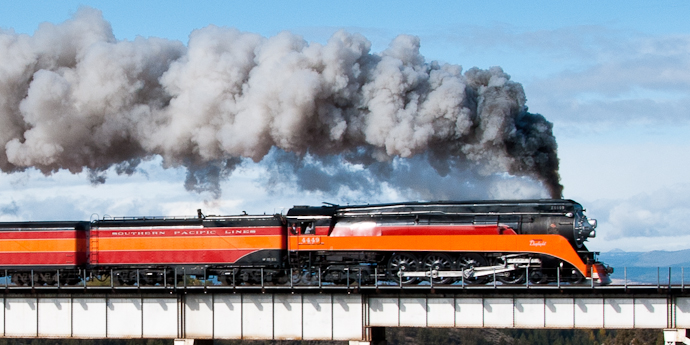

Last updated: 24 June, 2015
| Builder: | Lima Locomotive Works, Lima, OH |
| Build #: | 7817 |
| Date: | 1941 |
| Engine #: | 4449 |
| Railroad: | Southern Pacific |
| Website: | www.orhf.org, www.4449.com |
| Email: | info@orhf.org |
| Location: | Oregon Rail Heritage Center, 2250 SE Water Ave. Portland, OR 97214 |
| GPS: | 45.505946, -122.660664 Parking under Hwy-99 at end of Grand St. |
| Phone: | 503-233-1156 |
| Status: | Operational |
| Notes: | Donated 1958. |
Built in 1941 as a 4-8-4 GS-4 locomotive, she is 110′ long, 10′ wide and 16′ tall. With locomotive and tender weighing 433 tons and a boiler pressure of 300 psi, her eight 80″ diameter drivers and unique firebox truck booster can apply 5,500 horsepower to the rails and exceed 100 mph. The only remaining operable “streamlined” steam locomotive of the Art Deco era, this grand Lady of the High Iron pulled Southern Pacific “Daylight” coaches from Los Angeles to San Francisco over the scenic Coast Route and then on to Portland until 1955.
Retired to Oaks Park in 1958 for display only, many thought 4449 would never run again. In 1974 she was completely restored specifically to pull the 1976 Bicentennial Freedom Train throughout the United States to the delight of over 30 million people. SP 4449 has also operated numerous excursions since. She is arguably one of the most beautiful locomotives ever built and kept that way by the all-volunteer Friends of SP 4449.
| Class: | GS-4 |
| Gauge: | 4'-8½" |
| F.M.Whyte: | 4-8-4 |
| Drivers: | 80” |
| Gear Ratio: | |
| Tractive Effort: | |
| Weight: | 433 tons |
| Weight on Drivers: | |
| Length: | 110 feet |
| Boiler: | |
| Cylinders: | |
| Top Speed: | |
| Horsepower: | 6,500 |
| Fuel: | |
| Fuel Type: | Oil |
| Water: | |
| Steam psi: | 300 psi |